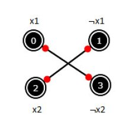
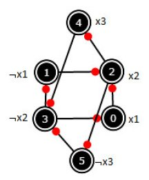

Vamos considerar o problema de ter que satisfazer uma fórmula 2-CNF, ie, uma conjunção de disjunções de duas variáveis booleanas (ou as suas negações).
Um exemplo: (x1 ∨ x2) ∧ (¬x1 ∨ ¬x2)
Será que é possível satisfazer este exemplo? Sim, se x1 = true e x2 = false.
Outro exemplo: (x1 ∨ x2) ∧ (¬x1 ∨ x2) ∧ (¬x2 ∨ x3) ∧ (¬x2 ∨¬x3)
Neste caso não é possível satisfazer o problema. Poderíamos calcular as oito linhas da tabela de verdade para verificar este facto.
Chama-se a este problema 2-SAT porque pretendemos satisfazer cláusulas com duas variáveis.
O problema mais geral (onde uma disjunção pode ter n variáveis) chama-se SAT e é NP-completo, sendo problemas que não se conhecem soluções de complexidade polinomial, apenas exponencial.
No entanto, o problema 2-SAT é de complexidade polinomial e pode ser resolvido mais rapidamente.
O primeiro passo é perceber que uma fórmula 2-CNF pode ser traduzida para um grafo!
Como? Ora sabemos que (a ∨ b) ≡ (¬a ⇒ b) ≡ (¬b ⇒ a) e estas implicações vão tornar-se arestas orientadas entre os nós das variáveis (ou das suas negações).
Vejamos o primeiro exemplo: (x1 ∨ x2) ∧ (¬x1 ∨ ¬x2)
(x1 ∨ x2) ≡ (¬x1 ⇒ x2) ≡ (¬x2 ⇒ x1)
(¬x1 ∨ ¬x2) ≡ (x1 ⇒ ¬x2) ≡ (x2 ⇒ ¬x1)
o que produz o grafo:

Já o segundo exemplo (x1 ∨ x2) ∧ (¬x1 ∨ x2) ∧ (¬x2 ∨ x3) ∧ (¬x2 ∨¬x3) produz o grafo (confiram)

E agora vem a propriedade que justifica este mapear:
uma fórmula 2-CNF é satisfazível se e só se nenhuma variável pertence ao mesmo SCC (strong connected component) que a sua negação.
Na primeira fórmula há duas SCC's, {0,3} e {1,2} e em nenhuma das quais recai uma variável e a sua negação. Já na segunda fórmula só há uma SCC onde estão todos os nós e isso inclui, por exemplo, x1 e ¬x1, o que torna a fórmula não satisfazível.
Poder-se-ia usar o método de cálculo das SCC da classe dada Graph. Ter-se-ia ainda de verificar se as variáveis e as suas negações estariam nas mesmas componentes ou não.
A solução seguinte não usa estes métodos e é auto-contida (menos código para digitar).
import java.util.*;
import java.util.stream.Stream;
public class SAT2 {
static void dfs1(List<Integer>[] graph, boolean[] used, List<Integer> order, int u) {
used[u] = true;
for (int v : graph[u])
if (!used[v])
dfs1(graph, used, order, v);
order.add(u);
}
static void dfs2(List<Integer>[] reverseGraph, int[] comp, int u, int color) {
comp[u] = color;
for (int v : reverseGraph[u])
if (comp[v] == -1)
dfs2(reverseGraph, comp, v, color);
}
public static boolean[] solve2Sat(List<Integer>[] graph) {
int n = graph.length;
boolean[] used = new boolean[n];
List<Integer> order = new ArrayList<>();
for (int i = 0; i < n; ++i)
if (!used[i])
dfs1(graph, used, order, i);
List<Integer>[] reverseGraph = Stream.generate(ArrayList::new).limit(n).toArray(List[]::new);
for (int i = 0; i < n; i++)
for (int j : graph[i])
reverseGraph[j].add(i);
int[] comp = new int[n];
Arrays.fill(comp, -1);
for (int i = 0, color = 0; i < n; ++i) {
int u = order.get(n - i - 1);
if (comp[u] == -1)
dfs2(reverseGraph, comp, u, color++);
}
for (int i = 0; i < n; ++i)
if (comp[i] == comp[i ^ 1])
return null;
boolean[] res = new boolean[n / 2];
for (int i = 0; i < n; i += 2)
res[i / 2] = comp[i] > comp[i ^ 1];
return res;
}
O seguinte main() testa este código para a fórmula (a ∨ b) ∧ (b ∨ ¬c) :
public static void main(String[] args) {
int n = 6;
List<Integer>[] g = Stream.generate(ArrayList::new).limit(n).toArray(List[]::new);
int a = 0, na = 1, b = 2, nb = 3, c = 4, nc = 5;
// (a \/ b) /\ (b \/ !c) <=>
g[na].add(b); // !a => b
g[nb].add(a); // !b => a
g[nb].add(nc); // !b => !c
g[c].add(b); // c => b
boolean[] solution = solve2Sat(g);
System.out.println(Arrays.toString(solution));
}
}
Testem o código resolvendo o problema UVa 10319 - Manhattan. Leiam a pg.337 do Halim que dá pistas para resolver este problema.